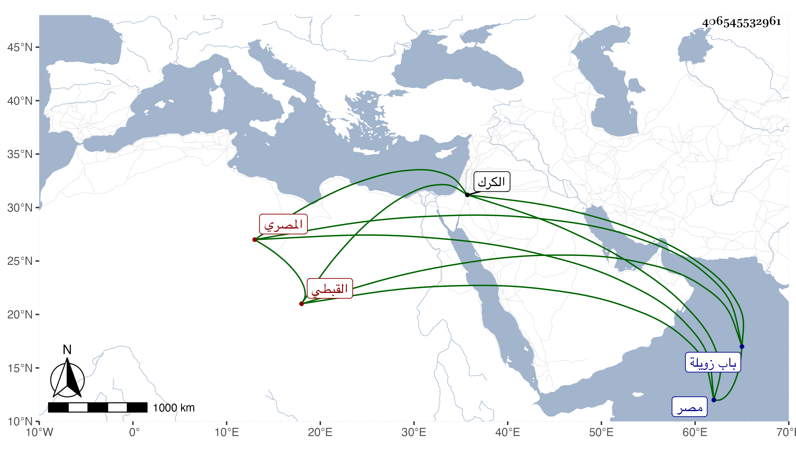

0902Sakhawi.DawLamic.ITO20230111-ara1.EIS1600.406545532961
Biography ID: 406545532961
846
عبد الكريم بن عبد الرزاق بن إبراهيم كريم الدين أبو الفضائل القبطي المصري أخو الفخر عبد الرحمن والزين نصر الله ويعرف بابن مكانس . ولد بمصر وتنقل في الخدم الديوانية إلى أن اتصل بخدمة يلبغا الناصري في الدولة الاشرفية شعبان ابن حسين فلما قتل الاشرف وصار التدبير لبركة وبرقوق قام الاخوة الثلاثة بنو مكانس بمرافعة الشمس عبد الله المقسي وتولى هذا من بينهم الحوطة على حواصله فاستقر عوضه في الخاص مضافا لما معه من الوزر في ثامن عشر جمادى الأولى سنة ثمانين فلم يلبث أن غضب عليه برقوق وأمر به وبأخيه الفخر في تاسع شعبان منها فألقيا في الأرض وضربا لكونه شرع في تحديد مظالم كان أبطلها أستاذ برقوق يلبغا العمري الخاصكي ثم أفرج عنهم في ذي الحجة منها واستمر بطالا إلى أن طلبه بركة في جملة الوزراء البطالين في ذي القعدة من التي بعدها فضربه بالمقارع نحو عشرين شبا ثم قام معه يلبغا الناصري حتى أطلق ولزم داره فلما قتل بركة أعيد إلى الخاص في منتصف جمادى الثانية سنة ثلاث وثمانين ثم أضيف إليه الوزر أيضا ففتك في الناس وساءت سيرته على عادته وأخذ أموال تجار الكارم فأفحش فعزل عن الخاص في رمضان منها بل استقر جاركس الخليلي مشير الدولة فلا يتصرف هو ولا غيره من الوزراء إلا بأمره فدام على ذلك إلى أواخر ذي القعدة منها فقبض على الثلاثة إلى أن هرب هذا من ميضأة جامع الصالح خارج باب زويلة واختفى مدة ثم ظهر ودام معزولا إلى أن صار يلبغا الناصري مدير المملكة بعد خلع برقوق وحبسه بالكرك فصار كريم الدين عنده كمشير المملكة ولم ينفك عن عادته في التهور وسرعة الحركة إلى أن زالت أيام الناصري فتخومل إلى أن مات بعد خطوب قاساها في جمادى الآخرة سنة ثلاث ، وكان من أعاجيب الزمان في خفة العقل والطيش وسرعة الحركة وكثرة التقلب ويقال إنه قال لبعض حواشيه حين نزوله بخلعة عوده للوزر والفأس بين يديه يا فلان ما هذه الركبة غالية بعلقة مقارع ، وقد ذكره شيخنا في انبائه باختصار فقال وكان مهابا مقداما متهورا ولم يكن فيه ما في أخيه من الانسانية والأدب إلا أنه كان مفضالا كثير الجود بأصحابه ، وذكره المقريزي في عقوده .
